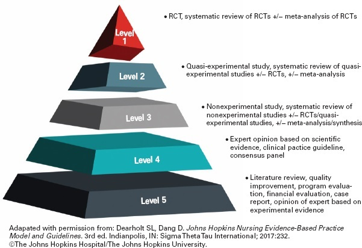

A Scientific Smell Test

The short version
When encountering scientific claims - or really any objective claim - it can be difficult to know what to believe, especially when there seems to be conflicting stories. In the world of COVID-19 shutdowns and stay-at-home orders, it can be hard to parse through the deluge of information and figure out what’s going on. The following set of questions can serve as a sort of “smell test” to get an initial sense of the validity of the claims at hand.
- Who or what is the source? Why should we listen to them?
- Are they citing sources or presenting data?
- What is their expertise?
- Are the claims extravagant?
- Does the source have a known bias?
The long version
The COVID-19 pandemic rather abruptly thrust science into peoples’ faces. In a very short timeframe we went from ordinary news, to “There’s an outbreak in China,” to “It’s spreading worldwide,” to “It’s here and governors are issuing expansive shutdowns and stay-at-home orders.” People were suddenly inundated statistical claims and scientific results (as of July 20, 2020, Nature reported there to be 65,470 scientific papers on COVID-19).
The problem is that most people are not statisticians or epidemiologists. Most people are not microbiologists, immunologists, or researchers in a slew of other biomedical fields. Most people are not highly trained in research methods and reading the results.
A constantly updating deluge of technical information that most people have a difficult time understanding creates a prime situation for misinformation, confirmation bias, and conspiracy theories to propagate. We have seen much of this in the course of the COVID-19 pandemic.
My intent in this post is to give a few questions you can ask yourself to assess new information - whether it’s a scientific article, a news report, or a post on social media. My set of questions is not exhaustive, but represents a fairly good first pass to sort out what is reliable from what is not. Many of the claims that I’ve seen posted across social media fail at least one, if not several or all, of the questions on my list.
Question 1: Who or what is the source, and why should we listen to them?
When it comes to objective and scientific claims, I think there are two main things to pay attention to: Evidence and expertise. If you can’t identify at least one of these things, there is no reason to believe the source. It doesn’t matter if something “just makes sense” or if someone’s “gut feeling” leans a certain way. That’s valid for subjective matters, but not for assessing scientific results.
So from the get-go, ask yourself: Is there evidence being cited, or does this person have expertise? If the answers are “No” and “No,” then you should take anything they are claiming with a very large grain of salt.
Question 2a: Are they providing evidence?
There is a saying among statisticians: “In God we trust, all others bring data.” Probably a bit more common is another saying - called Hitchens’s razor: “What can be asserted without evidence can also be dismissed without evidence.” The point with both of these is that evidence reigns supreme.
That being said, simply presenting data does not in and of itself validate a claim. Data needs to be interpreted, and interpreting data is not always often not straightforward. There could be missing context from the subject-matter domain, technical language that could be easily misinterpreted, different “levels” of data quality, or other issues complicating the understanding of evidence.
Some might not understand the different levels of evidence. Some more formalized thoughts are available from Burns, Rohrich, and Chung (2011) or Glasofer and Townsend (2019). To summarize a bit from these:
- Tier 1: Systematic review of Tier 2 studies.
- Tier 2: Carefully designed experiments, including randomization and control. In medical fields, this should include blinding (preferably double-blind), and would often be dscribed as a randomized controlled trial (RCT).
- Tier 3: Non-experimental studies (including observational studies). These can be subject to various biases.
- Tier 4: Expert opinion, case studies (i.e., just looking at one or a few individual subjects).
I’m sure people could easily expand this list, or make some small adjustments. The point here is not to be comprehensive or “final,” it’s to provide a quick and dirty way to be able to think about evidence being presented. So if you see two seemingly contradictory results, instead of picking the one that you like the best, you might be able to think about the data quality from each study, and hence assess which result is based on the more reliable data.
This is one way in which expertise helps: Experts have been trained and have experience interpreting data from their field. They generally have a better understanding of data quality, of what the data might say, and of what data are important to consider. That last bit can be important: A person outside the field might point to some data and say “Look at X, this is big!” But a trained and experienced professional in the field might say, “Well, X isn’t really that important, we should be talking about Y instead.”
For example, suppose we were talking about the dangers of an electrical shock. Someone might say, “I sustained a 1,000 volt shock and I was just fine.” But someone who knows a bit more could retort “Okay, but voltage isn’t the important thing, amperage is much more relevant here.”
In general, I’d rank the “reliability” of claims as:
- Expert who is citing good evidence: Very high.
- Expert who is citing weak evidence: Good, pending the precise nature of the data.
- Expert speaking about their field, but not citing evidence: Good, but with reservations. Even experts can be mistaken, or have lost their credibility as did the former scientist featured in “Plandemic.”
- Non-expert citing evidence: Good, but with reservations, depending on quality of evidence and appropriateness of interpretation.
- Non-expert without evidence: Low, no reason to give them the time of day.
Question 2b: What is their expertise?
Now, just because someone has expertise doesn’t mean they are automatically a reliable source. The field of expertise also matters. I myself am a statistician, I can speak to statistical matters. Statistics is somewhat unique in that it is the language of science, permeating the scientific endeavor: Researchers need to communicate their results, and that communication typically involves statistical experimentation and analysis. As John Tukey put it, statisticians “get to play in everyone’s backyard”, meaning we get exposed to and pick up a bit of various topics. We might not be experts in the field, but we can usually understand and assess the results.
But you shouldn’t ask me to describe why or how a given protein does what it does. You shouldn’t ask me to describe the mechanism by which a medication functions. Or why some molecule will or will not react with another, or how the gravity of the sun and planets interact with each other in the solar system. Similarly, you should not ask me to run electrical wiring for a house or to repair a car engine.
My point here is that specialty matters. Nobody is an expert in all things. Some fields are closely related, so an expert in one may be highly competent in another, but many fields are exceedingly diverse. So it’s important to keep someone’s specialty in mind when listening to what they have to say.
I’ve seen a number of times people quote physicians (MD or DO) when talking about COVID-19. That’s perfectly fine, when the topic is a clinical matter. Just as being a statistician doesn’t make me an expert in medicine, having a medical degree doesn’t make one an expert in statistics or epidemiology. Just because a topic is related in some way to the medical field does not make physicians the foremost experts.
One job that I’ve held has been as a professor in a biostatistics department. I’ve collaborated with MDs and residents, and I’ve taught aspiring doctors. Some of the doctors had a solid grasp of statistical methods. Most did not. Fewer still should conduct their own statistical analysis. The students aiming for med school often took one or two courses in statistics, not enough to offer a comprehensive understanding statistics, much less the ability to properly conduct statistical analysis. Some were diligent students that probably retained the ideas of the course past the end of the semester. But most were (due to the competitiveness of med school applications) were hyper-focused on grades rather than understanding, and likely retained little if anything that we talked about after the final exam.
To be sure, there are some MDs who are excellent researchers, Dr. Anthony Fauci is a prime example. But when talking about a statistical or epidemiological analysis an MD is not automatically an expert, they may very well be talking outside of their domain of expertise.
Question 4: Are the claims extravagant?
As Carl Sagan said, “Extraordinary claims require extraordinary evidence.” There are sometimes dramatic breakthroughs, but usually results are much more mundane or incremental in nature. If you see a headline or claim that seems too good to be true, it’s probably either misleading clickbait, misinformation, or conspiracy.
Forbes did an article about this subject, you can find it here. The Atlantic did a piece on Dr. John Ioannidis which can be read here. In it, Dr. Ioannidis is quoted to say:
Often the claims made by studies are so extravagant that you can immediately cross them out without needing to know much about the specific problems with the studies
Even scientists can be guilty of over-hyping their conclusions. Press releases may exaggerate a bit more, media outlets take it up another few notches, and people on social media blow it up to cosmic proportions.
Question 5: Does the source have a known bias?
Biased sources are likely to selectively interpret results, and either overlook or deliberately obscure flaws. That’s why a lot of research has a statement about funding sources. Remember those doctors from Bakersfield, California? They run a private urgent care facilities. They had an enormous conflict of interest: Personal profit. If they did not have that incredible bias, they may have been more reserved about their comments, and perhaps noticed the dramatic statistical and scientific errors they were making, and for which they were condemned by two major medical associations, the American College of Emergency Physicians and the American Academy of Emergency Medicine.
A financial bias is not the only bias out there. Various news outlets have a strong bias, and will omit certain facts, or selectively choose stories that spin a particular narrative. If a source is known to have a strong bias (be it right or left), then caution should be exercised in assessing the claims being made. This goes doubly so when the source itself acknowledges that it is biased, which ties back to the first question: Who is the source and why should we believe them? If the source admits they are biased, we should be skeptical of anything they have to say.
That’s not to say that a source can’t be biased without acknowleding it, the bias might just be more difficult to verify. My point is that if the source is already overlty admitting a bias then you should from the get-go not expect a neutral or objective consideration of the topic. And if that’s the case, then you should again take any conclusion with a large grain of salt.
So that’s it. The first real post I put on my website, and what I think is a solid set of questions to consider when faced with some scientific claim.